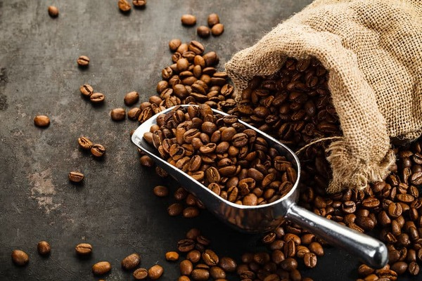

Historia del cafe
Según una leyenda, fue un joven pastor yemení llamado Kaldi quien descubrió la planta del café.Kaldi observó un comportamiento extraño en su rebaño, que brincada y saltaba enérgicamente, tras ingerir los frutos rojos de un arbusto hasta entonces desconocido.Sorprendido por este hecho el pastor arrancó varios frutos y se los mostró a un superior religioso de un convento cercano.El religioso probó a hervir las bayas y beber la infusión resultante, pero era demasiado amarga y la desechó.Al tirar aquellos frutos al fuego observó cómo al tostarse desprendían un agradable aroma.De nuevo probó a preparar una infusión con las bayas ya tostadas, descubriendo entonces lo que hoy conocemos como café.
